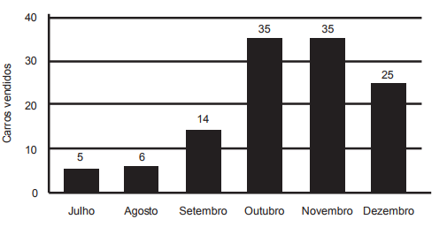

(ENEM 2014 2ª APLICAÇÃO) Após encerrar o período de vendas de 2012, uma concessionária fez um levantamento das vendas de carros novos no último semestre desse ano. Os dados estão expressos no gráfico:
Ao fazer a apresentação dos dados aos funcionários, o gerente estipulou como meta para o mês de janeiro de 2013 um volume de vendas 20% superior à média mensal de vendas do semestre anterior. Para atingir essa meta, a quantidade mínima de carros que deveriam ser vendidos em janeiro